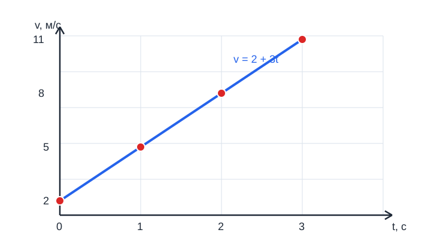

Физика 9. Скорость прямолинейного равноускоренного движения. График скорости
Главная мысль урока
При равноускоренном движении скорость изменяется одинаково за равные промежутки времени. Поэтому зависимость скорости от времени изображается прямой линией, а ускорение можно определить по её наклону.
Формула скорости
Если тело имеет начальную скорость \(v_0\) и постоянное ускорение \(a\), то его скорость через время \(t\) равна:
Для движения вдоль выбранной оси используют проекции:
Здесь \(v_{0x}\) — начальная проекция скорости, \(a_x\) — проекция ускорения. Если тело начинает движение из состояния покоя, \(v_0=0\), поэтому:
Скорость изменяется на величину:
При \(a>0\) скорость в выбранном направлении увеличивается, при \(a<0\) — уменьшается. Знак описывает направление относительно выбранной оси, а не только «разгон» или «торможение».
График скорости \(v(t)\)
По горизонтальной оси откладывают время \(t\), а по вертикальной — скорость \(v\). Для постоянного ускорения график имеет вид прямой:
- точка пересечения с осью скорости показывает начальную скорость \(v_0\);
- наклон прямой характеризует ускорение;
- возрастающая прямая соответствует \(a>0\);
- убывающая прямая соответствует \(a<0\);
- горизонтальная прямая означает \(a=0\), то есть равномерное движение.
Если известны две точки графика \((t_1,v_1)\) и \((t_2,v_2)\), ускорение находят так:
Единица ускорения — \(м/с^2\): она показывает, на сколько метров в секунду изменяется скорость за одну секунду.
Как построить график по формуле
Пусть \(v_0=2\ м/с\), \(a=3\ м/с^2\). Тогда:
Составим таблицу значений:
| \(t\), с | 0 | 1 | 2 | 3 |
|---|---|---|---|---|
| \(v\), м/с | 2 | 5 | 8 | 11 |
SVG — это текстовый формат описания векторной графики. В статье график вставлен как SVG-изображение: его можно масштабировать без потери качества.

Точки \((0;2)\), \((1;5)\), \((2;8)\) и \((3;11)\) лежат на одной возрастающей прямой. Наклон этой прямой соответствует ускорению \(3\ м/с^2\).
Нанесём точки на координатную плоскость и соединим их прямой. При увеличении времени на \(1\ с\) скорость возрастает на \(3\ м/с\), что соответствует ускорению \(3\ м/с^2\).
Разбор примеров
Пример 1. Нахождение скорости
Автомобиль двигался со скоростью \(6\ м/с\) и разгонялся с ускорением \(2\ м/с^2\). Через \(4\ с\):
Пример 2. Определение ускорения по графику
За \(5\ с\) скорость увеличилась от \(4\ м/с\) до \(19\ м/с\). Наклон графика и ускорение равны:
Пример 3. Торможение
Скорость тела уменьшилась от \(18\ м/с\) до \(6\ м/с\) за \(4\ с\):
Отрицательное значение показывает, что ускорение направлено противоположно выбранному положительному направлению.
Важное различие
Площадь под графиком скорости связана с перемещением, а наклон графика — с ускорением. Нельзя находить ускорение по площади: для ускорения нужно сравнить изменение скорости и изменение времени.
Вопросы и задания
- Запишите формулу скорости при равноускоренном движении и объясните обозначения.
- Как изменяется скорость тела с \(v_0=5\ м/с\) и \(a=2\ м/с^2\) за \(6\ с\)?
- Тело двигалось со скоростью \(20\ м/с\) и остановилось за \(5\ с\). Найдите ускорение.
- По графику скорость увеличилась от \(3\ м/с\) при \(t=1\ с\) до \(15\ м/с\) при \(t=7\ с\). Найдите ускорение.
- Опишите, как будет выглядеть график \(v(t)\) при \(v_0=10\ м/с\) и \(a=-2\ м/с^2\). В какой момент тело остановится?
- Объясните своими словами, чем на графике скорости отличаются наклон прямой и площадь под прямой.
Ответы для самопроверки
1. \(v=v_0+at\); \(v_0\) — начальная скорость, \(a\) — постоянное ускорение, \(t\) — время.
-
\(v=5+2\cdot6=17\ м/с\).
-
\(a=(0-20)/5=-4\ м/с^2\).
-
\(a=(15-3)/(7-1)=2\ м/с^2\).
-
График — убывающая прямая \(v=10-2t\); тело остановится при \(t=5\ с\).
-
Наклон показывает ускорение, площадь под графиком — перемещение за выбранный промежуток времени.
Итог урока
- Скорость при постоянном ускорении определяется формулой \(v=v_0+at\).
- График скорости от времени — прямая линия.
- Наклон графика равен ускорению: \(a=\Delta v/\Delta t\).
- Площадь под графиком скорости связана с перемещением.